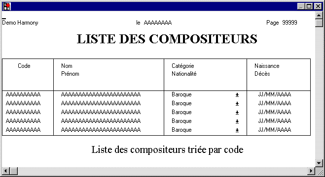

Le choix Simuler un état du menu Blocs permet de simuler une impression d'état à l'écran afin d'obtenir une vision d'ensemble des blocs. Ceci permet en particulier de vérifier que tous les objets sont bien alignés.
La boîte de dialogue se compose de deux colonnes. La colonne Bloc contient un numéro de bloc, la colonne Nombre de fois contient le nombre de fois où ce bloc doit être répété.
Exemple de paramétrage :
|
Bloc |
Nombre de fois |
|
1 |
1 |
|
2 |
5 |
|
3 |
1 |
|
4 |
1 |
Le bloc 1 est affiché une fois, suivi de cinq occurrences du bloc 2, suivies du bloc 3 et 4.
Exécution de la simulation
Validez pour exécuter la simulation et afficher par exemple :

Pour revenir ensuite en mode d'édition, tapez Entrée ou F10.
Voir Notion de bloc